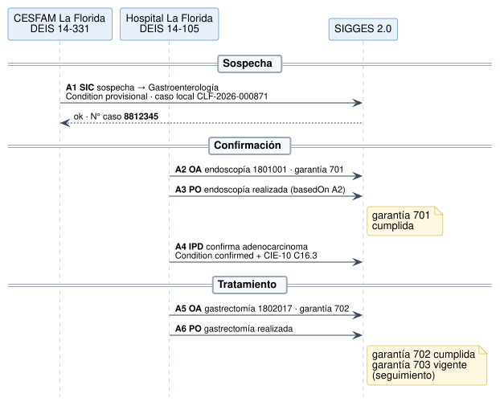
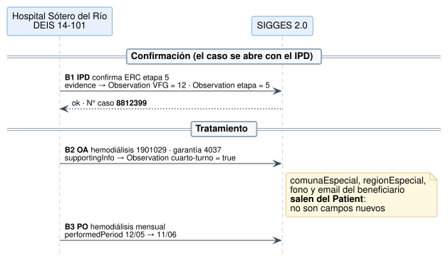
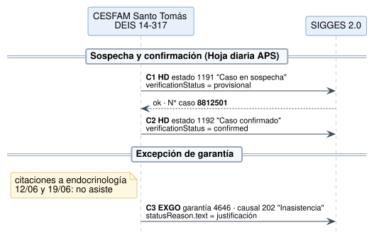
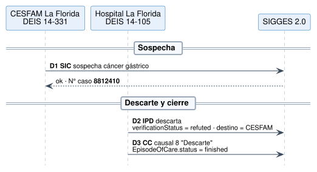

Notificación de Casos GES a SIGGES 2.0
0.4.0 - ci-build

Notificación de Casos GES a SIGGES 2.0
0.4.0 - ci-build

Notificación de Casos GES a SIGGES 2.0 - Local Development build (v0.4.0) built by the FHIR (HL7® FHIR® Standard) Build Tools. See the Directory of published versions
Los ejemplos cubren 4 pacientes ficticios, los 7 tipos de documento y las situaciones típicas: apertura por SIC, IPD o HD, confirmación, descarte, tratamiento, excepción, cierre, respuestas y consulta. Todos pasan la validación contra los perfiles y generan un JSON v1.5 con todos los campos obligatorios de la API (verificado en la 0.4.0 con tools/fhir2sigges.py).
Juan Carlos Pérez Soto · PS 27, rama 108 · CESFAM La Florida → Hospital La Florida.

| # | Mensaje | Foco | Qué muestra |
|---|---|---|---|
| A1 | SIC | ServiceRequest + Condition sospecha | Apertura con caso local; respuesta OK con N° SIGGES |
| A2 | OA | Endoscopía | Garantía 701, especialidad de destino de apoyo diagnóstico |
| A3 | PO | Procedure | basedOn → OA; rol sin profesional; reenvío idempotente |
| A4 | IPD | Condition confirmed | Coding CIE-10 adicional (crecimiento) |
| A5 | OA | Gastrectomía | Garantía 702 |
| A6 | PO | Procedure | Cumple la garantía 702 |
María Isabel González Rojas · PS 1, rama 125 · Hospital Sótero del Río.

| # | Mensaje | Qué muestra |
|---|---|---|
| B1 | IPD | Caso abierto directamente por IPD; VFG y etapa como Observation |
| B2 | OA | Cuarto turno en supportingInfo; comuna, fono y email del Patient; respuesta con información |
| B3 | PO | Tratamiento mensual con performedPeriod.end = fechaFin |
Luis Alberto Muñoz Díaz · PS 7, rama 129 · CESFAM Santo Tomás.

| # | Mensaje | Qué muestra |
|---|---|---|
| C1 | HD | Estado 1191 (sospecha) = provisional |
| C2 | HD | Estado 1192 (confirmado) = confirmed |
| C3 | EXGO | Garantía 4646, causal 202 Inasistencia, con justificación |
Rosa Elena Tapia Vidal · PS 27 · CESFAM La Florida → Hospital La Florida.

| # | Mensaje | Qué muestra |
|---|---|---|
| D1 | SIC | Mismo flujo de entrada que el caso A |
| D2 | IPD | refuted (descarta), destino de vuelta a APS |
| D3 | CC | Causal 8 Descarte; EpisodeOfCare finished |
Cada caso GES se publica también por sí mismo, para que los diagnósticos, órdenes, prestaciones y tareas sueltos lo puedan referenciar: caso A, caso B, caso C, caso D y el caso 8812345, que es el caso A tal como lo devuelve SIGGES en la consulta. Cada uno muestra el último estado del caso en su secuencia de mensajes.
Cada Bundle tiene su equivalente JSON v1.5, generado por el traductor de referencia. Dos ejemplos:
A1 · SIC → POST /interoperabilidad/sigges/documentos/sic/registrar
{
"comunaDirPaciente": "13110",
"confirmaSospechaDescarta": "S",
"deisEstablecimientoDestino": "14-105",
"deisEstablecimientoOtorga": "14-331",
"deisOrigen": "14-331",
"deisServicioSaludDestino": "14",
"deisServicioSaludOtorga": "14",
"derivadaPara": "1",
"diagnostico": "Sospecha de cáncer gástrico",
"direccionPaciente": "Av. Vicuña Mackenna 7110, depto 402",
"dvPaciente": "3",
"dvProfesional": "7",
"especialidadDestino": "07-105-2",
"especialidadOrigen": "07-900-1",
"fechaInicioDocumento": "02/03/2026",
"fechaNacimientoPaciente": "14/03/1961",
"folioDocumentoHospital": "SIC-CLF-2026-000871",
"fonoPaciente": "+56 9 8123 4567",
"fundamentoDiag": "Epigastralgia persistente de 4 meses, baja de peso de 8 kg, anemia ferropénica (Hb 10,1 g/dL).",
"horaInicioDocumento": "10:15",
"indicacionExamen": "Omeprazol 20 mg cada 12 h. Control en APS con resultado de endoscopía.",
"nombrePaciente": "Juan Carlos",
"nombreSistemaOrigen": "RAYEN_APS",
"nombresProfesional": "Camila Andrea",
"primerApellidoPaciente": "Pérez",
"primerApellidoProfesional": "Rojas",
"problemaSalud": "27",
"ramaProblemaSalud": "108",
"regionDirPaciente": "13",
"runPaciente": "9876543",
"runProfesional": "15934286",
"segundoApellidoPaciente": "Soto",
"segundoApellidoProfesional": "Muñoz",
"sexoPaciente": "2",
"tipoDeisOrigen": "PUBLICO"
}
B2 · OA con datos especiales → POST /interoperabilidad/sigges/documentos/ordenatencion/registrar
{
"codigoPrestacion": "1901029",
"comunaEspecial": "13201",
"cuartoTurnoEspecial": "S",
"deisEstablecimientoDestino": "14-101",
"deisEstablecimientoOtorga": "14-101",
"deisOrigen": "14-101",
"deisServicioSaludDestino": "14",
"deisServicioSaludOtorga": "14",
"derivadaPara": "7",
"diagnostico": "ERC etapa 5",
"dvPaciente": "6",
"dvProfesional": "0",
"emailBeneficiarioEspecial": "maria.gonzalez@correo.cl",
"especialidadDestino": "07-108-2",
"especialidadOrigen": "07-108-2",
"fechaInicioDocumento": "06/05/2026",
"folioDocumentoHospital": "OA-SR-2026-002218",
"fonoBeneficiarioEspecial": "+56 9 7788 1122",
"garantia": "4037",
"horaInicioDocumento": "15:00",
"nombrePrestacion": "HEMODIALISIS CON BICARBONATO CON INSUMOS(TRATAMIENTO MENSUAL)",
"nombreSistemaOrigen": "SISTEMA_HOSPITAL",
"nombresPaciente": "María Isabel",
"nombresProfesional": "Valentina",
"primerApellidoPaciente": "González",
"primerApellidoProfesional": "Soto",
"problemaSalud": "1",
"ramaProblemaSalud": "125",
"regionEspecial": "13",
"runPaciente": "7654321",
"runProfesional": "14209771",
"segundoApellidoPaciente": "Rojas",
"segundoApellidoProfesional": "Araya",
"tipoDeisOrigen": "PUBLICO"
}
Los 15 JSON se generan con tools/fhir2sigges.py --ejemplos y quedan en input/includes/api-v15/; las dos muestras de arriba se incluyen desde ahí, así que no se desalinean del traductor.